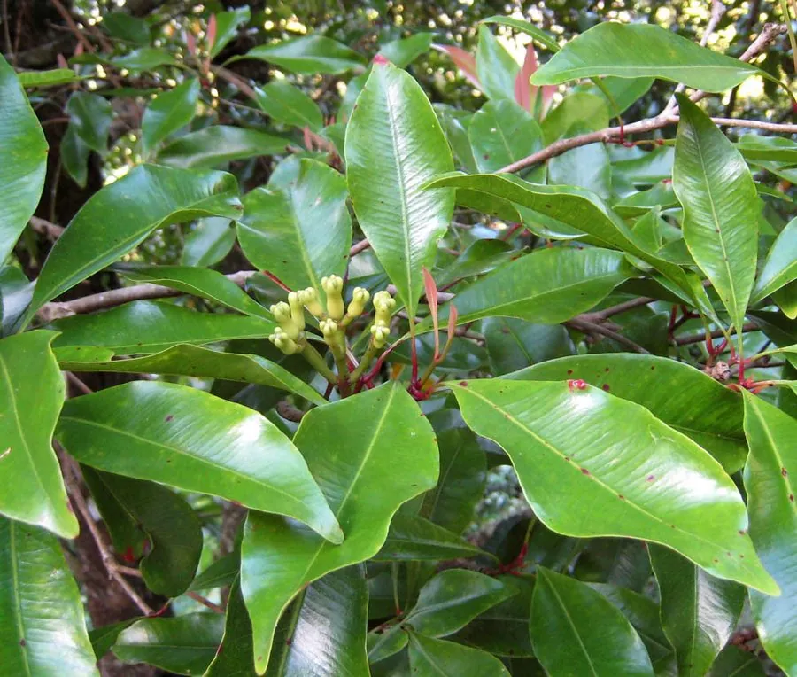

农作物与经济植物 · 植物界
丁子香 Syzygium aromaticum

丁子香是桃金娘科常绿乔木，干燥花蕾即丁香，香气辛烈，是糕点、卤味和咖喱常用香料，也可提取丁香油。
- 分类
- 门被子植物门纲双子叶植物纲目桃金娘目科桃金娘科属蒲桃属
- 栖息环境
- 热带海岛与湿润丘陵，喜高温高湿
- 地理分布
- 原产印度尼西亚马鲁古群岛，现栽培于东南亚、中国海南与云南
- 保护级别
- 暂无评估（栽培作物）
物种志
丁子香是桃金娘科常绿乔木，株高 10–20 m，树冠圆锥形，叶片长椭圆形，革质，对生。花为聚伞花序，花蕾淡绿转粉红，成熟时采摘，采收后需及时烘干，颜色转为深褐。干燥花蕾形似小钉，故称丁香，香气浓郁。果实为浆果，成熟时紫红。
丁子香原产印度尼西亚马鲁古群岛，是著名的“香料群岛”特产，曾由荷兰垄断贸易。它喜高温高湿、光照充足，适宜在排水良好的火山土生长。花蕾在开放前采收，晒干后即为丁香。丁香可作糕点、卤味、咖喱和烟草香料，也可提取丁香油；丁香酚有麻醉镇痛作用。中国海南、云南有引种。丁香以花蕾完整、香气浓烈者为佳，丁子香树寿命可达百年。
形态与习性
- 株高10–20 m，常绿乔木
- 叶长椭圆形，革质，对生
- 花聚伞花序，花蕾淡绿转粉红
- 产品干燥花蕾为丁香
- 用途糕点、卤味、咖喱与丁香油
- 原产地印度尼西亚马鲁古群岛
趣味知识
- 丁香其实是丁子香未开放的花蕾，形状像小钉子。
- 丁子香原产印度尼西亚“香料群岛”，曾是非常昂贵的香料。
- 丁香酚是丁香油的主要成分，有麻醉镇痛作用。